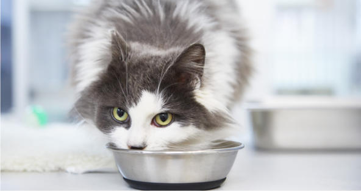

Should cats with kidney disease be fed a specific diet?
Pet's info: Cat | Domestic Longhair | Male | neutered
Location: United States

1 Comment
Comment 1
Ricardo Fernandez, DVM:
Veterinary Oncology Resident
"Simply eating regularly is the most important part of nutritional management for cats with kidney disease. However, it is preferable to feed cats with chronic kidney disease a prescription diet that is lower in protein, sodium, and phosphorus, but higher in fat than over the counter commercial diets. Of these diets, canned foods are recommended over dry foods due the higher water content present, but dry foods can be soaked in water as well. Some cats simply refuse to eat any and all specific kidney diets, so if all available prescription kidney diets have been tried and rejected, it is better to have a cat eat something, even if the protein content is less than ideal. Always discuss specific diet selections with a veterinarian."


1 Comment
Comment 1
Ricardo Fernandez, DVM:
Veterinary Oncology Resident
"Simply eating regularly is the most important part of nutritional management for cats with kidney disease. However, it is preferable to feed cats with chronic kidney disease a prescription diet that is lower in protein, sodium, and phosphorus, but higher in fat than over the counter commercial diets. Of these diets, canned foods are recommended over dry foods due the higher water content present, but dry foods can be soaked in water as well. Some cats simply refuse to eat any and all specific kidney diets, so if all available prescription kidney diets have been tried and rejected, it is better to have a cat eat something, even if the protein content is less than ideal. Always discuss specific diet selections with a veterinarian."
Was this answer helpful?
Let other pet parents know what you think
109 Pet parents found this article helpful